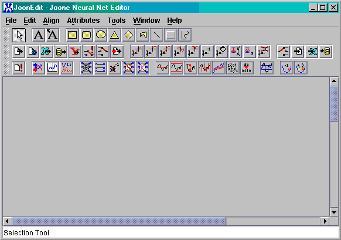

The development pane is the work area for developing neural networks. The development pane is the grey area beneath the line of toolbar items.
Items from the toolbar can be placed on the development pane and manipulated. See the How To... section for detailed information on adding and manipulating items in general.
Depending on screen resolution, the development pane may be scrolled. The scrollbars beneath and to the right of the development pane allow the complete area to be navigated.
